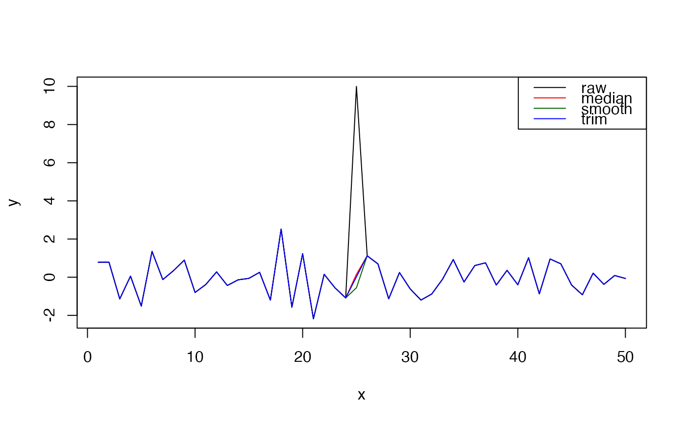
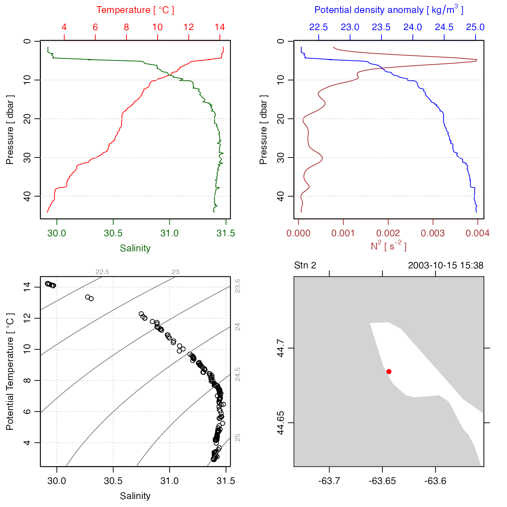

The method identifies spikes with respect to a "reference" time-series, and
replaces these spikes with the reference value, or with NA according
to the value of action; see “Details”.
despike( x, reference = c("median", "smooth", "trim"), n = 4, k = 7, min = NA, max = NA, replace = c("reference", "NA"), skip )
| x | a vector of (time-series) values, a list of vectors, a data frame, or an oce object. |
|---|---|
| reference | indication of the type of reference time series to be used in the detection of spikes; see ‘Details’. |
| n | an indication of the limit to differences between |
| k | length of running median used with |
| min | minimum non-spike value of |
| max | maximum non-spike value of |
| replace | an indication of what to do with spike values, with
|
| skip | optional vector naming columns to be skipped. This is ignored if
|
A new vector in which spikes are replaced as described above.
Three modes of operation are permitted, depending on the value of
reference.
For reference="median", the first step is to linearly interpolate
across any gaps (spots where x==NA), using approx() with
rule=2. The second step is to pass this through
runmed() to get a running median spanning k
elements. The result of these two steps is the "reference" time-series.
Then, the standard deviation of the difference between x
and the reference is calculated. Any x values that differ from
the reference by more than n times this standard deviation are considered
to be spikes. If replace="reference", the spike values are
replaced with the reference, and the resultant time series is
returned. If replace="NA", the spikes are replaced with NA,
and that result is returned.
For reference="smooth", the processing is the same as for
"median", except that smooth() is used to calculate the
reference time series.
For reference="trim", the reference time series is constructed by
linear interpolation across any regions in which x<min or
x>max. (Again, this is done with approx() with
rule=2.) In this case, the value of n is ignored, and the
return value is the same as x, except that spikes are replaced
with the reference series (if replace="reference" or with
NA, if replace="NA".
Dan Kelley
legend("topright", lwd=1, col=c("black", "red", "darkgreen", "blue"), legend=c("raw", "median", "smooth", "trim"))T <- ctd[["temperature"]] T[10] <- T[10] + 10 ctd[["temperature"]] <- T CTD <- despike(ctd) plot(CTD)